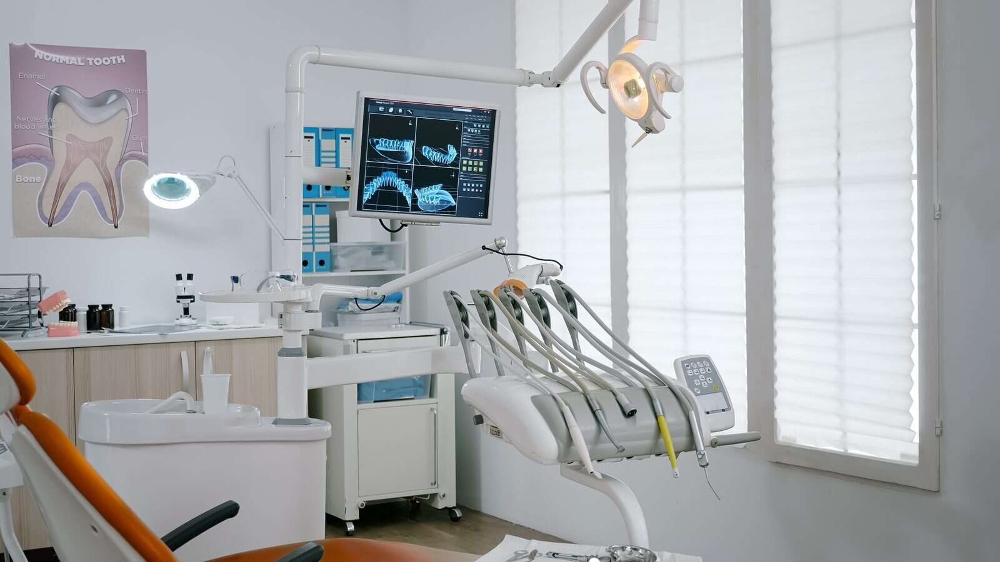

Soins dentaires à Charenton-le-Pont : quels soins et quand consulter ?
Fiche conseil · 15 min de lecture

Une dent douloureuse ou abîmée doit-elle forcément être remplacée ? Pas nécessairement : la réponse dépend de l’origine du problème et de l’état de la dent. La recherche « soins dentaires Charenton-le-Pont » traduit souvent une hésitation bien compréhensible : faut-il consulter pour une douleur, une carie ou une restauration à envisager ? Un examen permet d’évaluer la situation et de discuter des options adaptées.
Les soins dentaires vont de la prévention et des soins courants aux restaurations, aux prothèses et à l’orthodontie. Comprendre ces différentes approches aide à mieux préparer une consultation, sans présumer du traitement nécessaire. Cet article présente les principales familles de soins, les situations qui peuvent conduire à consulter un chirurgien-dentiste et les questions utiles pour participer aux décisions.
À Charenton-le-Pont, le cabinet du Dr Patrick Lellouche prend en charge les soins courants et les urgences bucco-dentaires, ainsi que les couronnes, les implants, les inlays, les facettes, les bridges, les appareils dentaires et l’orthodontie adulte par aligneurs transparents. Le scellement des sillons chez l’enfant fait également partie des soins proposés. Ces repères vous aideront à mieux comprendre les options et à engager une démarche adaptée à votre situation.
Points Clés
- Une gêne, un contrôle ou une dent abîmée peuvent justifier une consultation. L’examen aide à déterminer la conduite à tenir.
- Les soins dentaires à Charenton-le-Pont couvrent des besoins distincts, de la prévention aux restaurations et aux solutions prothétiques.
- Un symptôme similaire ne conduit pas nécessairement au même soin : l’évaluation de chaque situation guide les options à envisager.
- Le suivi régulier et les habitudes d’hygiène contribuent à prévenir certains problèmes. Une douleur ou une dent endommagée mérite une évaluation adaptée.
- Pour préparer votre démarche, notez vos symptômes, leur évolution et les questions auxquelles vous souhaitez obtenir une réponse.
Soins dentaires à Charenton-le-Pont : quels besoins peuvent conduire à consulter ?
Les soins dentaires regroupent les actes de prévention, d’évaluation et de traitement qui contribuent à la santé de la bouche et des dents. Une consultation peut répondre à différents besoins : faire le point lors d’un contrôle, parler d’une gêne ou examiner une dent qui semble nécessiter une restauration. Vous n’avez pas besoin de connaître le nom d’un soin avant de prendre rendez-vous. Décrire ce que vous ressentez et ce qui a changé constitue un bon point de départ.
Le symptôme ressenti ne suffit pas toujours à déterminer le soin nécessaire. Une douleur peut avoir plusieurs causes, et une dent abîmée peut nécessiter des réponses différentes selon son état. L’évaluation par le chirurgien-dentiste permet de préciser la situation et d’expliquer les options envisageables. Les soins dentaires à Charenton-le-Pont s’inscrivent ainsi dans un parcours guidé par le besoin constaté, plutôt que par un traitement choisi à l’avance.
Une douleur, une sensibilité, une gêne à la mastication, une dent endommagée ou le besoin d’un contrôle figurent parmi les motifs courants de consultation dentaire.
Quels signes peuvent motiver une consultation dentaire ?
Signalez une douleur, une sensibilité au chaud ou au froid, une gêne lorsque vous mâchez ou une dent visiblement endommagée. Si possible, notez depuis quand la gêne est présente, dans quelles circonstances elle apparaît et si elle évolue. Ces détails aident à comprendre votre demande, mais ne permettent pas à eux seuls de déterminer le traitement : un examen est nécessaire pour évaluer la dent et les tissus environnants.
Si la situation vous paraît préoccupante, exposez rapidement votre besoin au cabinet. Le cabinet du Dr Patrick Lellouche prend en charge les urgences bucco-dentaires. Lors de votre prise de contact, indiquez clairement les symptômes et leur évolution.
Soins dentaires à Charenton-le-Pont : pourquoi le contexte compte
Une recherche locale vise souvent à trouver un suivi de proximité et à comprendre concrètement les soins proposés. À Charenton-le-Pont, le cabinet du Dr Patrick Lellouche assure des soins de chirurgie dentaire. Vous pouvez y exposer votre besoin afin qu’il soit évalué selon votre situation. Cette démarche aide à distinguer une question de prévention d’une gêne qui nécessite une appréciation clinique, sans présumer à l’avance de la réponse thérapeutique.
La dentisterie comprend des domaines variés, de la prévention aux traitements et aux restaurations. Pour situer cette diversité, la présentation générale des soins dentaires et de leurs spécialités offre un aperçu complémentaire. Seul un examen au cabinet permet toutefois d’évaluer votre situation particulière. Lors de la consultation, vous pouvez demander ce qui a été observé, quelles options sont envisagées et pourquoi elles pourraient répondre à votre besoin. Une explication claire vous aide à comprendre les prochaines étapes.
Quels soins dentaires sont proposés au cabinet du Dr Lellouche ?
Au Cabinet dentaire du Dr Patrick Lellouche, à Charenton-le-Pont, les soins relèvent de plusieurs familles. Les soins courants répondent aux besoins de suivi et de santé bucco-dentaire. Les restaurations et les traitements prothétiques prennent en charge une dent ou remplacent une dent absente. Cette distinction aide à comprendre les options évoquées en consultation, sans supposer qu’un acte particulier convient à chaque patient.
Les soins dentaires à Charenton-le-Pont comprennent aussi le scellement des sillons chez l’enfant et l’orthodontie adulte par aligneurs transparents, sans bagues. Le choix du soin dépend de l’examen et de la situation individuelle. Le praticien peut en expliquer les raisons, présenter les options envisageables et détailler les étapes du parcours avant qu’une décision soit prise.
Soins courants et restaurations dentaires
Les soins courants s’inscrivent dans le suivi de la santé bucco-dentaire. Les restaurations concernent une dent dont la forme ou la structure doit être prise en charge. Parmi les solutions proposées figurent les inlays et les facettes. Ces restaurations sont distinctes et ne répondent pas automatiquement au même besoin. Leur indication dépend de l’état de la dent et de l’évaluation du praticien.
Les habitudes quotidiennes contribuent également à la prévention. Pour mieux comprendre les liens entre alimentation et santé dentaire, la ressource de la Mayo Clinic consacrée à l’alimentation et à la santé dentaire apporte des repères complémentaires. Ces informations générales ne remplacent pas l’examen, qui permet de déterminer si une restauration est appropriée dans une situation donnée.

Prothèses, implants et orthodontie adulte
Les solutions prothétiques répondent à des besoins différents. Une couronne en céramique, un bridge, un appareil dentaire et un implant ne sont pas interchangeables : le choix dépend notamment de la situation bucco-dentaire évaluée au cabinet. L’orthodontie adulte par aligneurs transparents est une autre démarche, destinée à accompagner l’alignement des dents sans bagues. Le praticien présente chaque option selon les objectifs et les caractéristiques du patient.
Pour préparer la consultation, notez vos questions : quel besoin le soin vise-t-il ? Quelles sont les options envisagées ? Quelles étapes faut-il prévoir ? Cette discussion vous aide à prendre part à la décision et à avancer avec des repères clairs. Pour découvrir les soins proposés, consultez le Cabinet dentaire du Dr Patrick Lellouche.
Un soin dentaire est-il le même pour tous les patients ?
Non. Une douleur, une dent fragilisée ou une dent absente peuvent conduire à des évaluations différentes et à des options de soins distinctes. Le symptôme décrit est un point de départ, pas une indication thérapeutique à lui seul. L’état des dents, les antécédents et les besoins exprimés orientent la discussion. Il n’existe donc pas de classement universel dans lequel un implant, un bridge, une couronne ou une restauration serait préférable dans toutes les situations.
Le tableau ci-dessous donne des repères généraux sur la façon dont un besoin peut être abordé. Les familles de soins mentionnées ne constituent pas une recommandation individuelle : seule une évaluation permet d’étudier leur pertinence.
| Besoin exprimé | Éléments à évaluer | Familles de soins envisageables |
|---|---|---|
| Douleur ou sensibilité | La dent concernée, la gêne décrite et les éléments observés lors de l’examen | Soins courants ou restauration, selon la situation |
| Dent abîmée ou fragilisée | L’état de la dent et l’étendue de la partie à restaurer | Inlay, facette ou couronne, selon l’indication |
| Dent absente | La situation bucco-dentaire et les besoins propres au patient | Bridge, appareil dentaire ou implant, selon l’évaluation |
| Souhait d’améliorer l’alignement | La position des dents et les attentes exprimées | Discussion autour de l’orthodontie adulte par aligneurs transparents |
Comment l’évaluation oriente-t-elle les options ?
La consultation commence par l’écoute du motif : ce qui vous gêne, ce que vous souhaitez comprendre et les changements remarqués. L’examen bucco-dentaire apporte ensuite des éléments pour discuter des options. Les antécédents et l’état des dents comptent également, car deux personnes qui décrivent une gêne comparable peuvent présenter des situations différentes. Une indication est une décision de soin adaptée à la situation clinique de chaque patient.
Comment prendre part à la décision de soin ?
Exposez vos attentes, vos inquiétudes et les contraintes qui influencent votre quotidien. Pour mieux comprendre la proposition, demandez quel bénéfice est attendu, quelles sont les étapes du soin et quelles suites peuvent être envisagées. Le praticien présente les options pertinentes et leurs objectifs afin que vous puissiez prendre une décision éclairée. Si un terme reste obscur, demandez une explication complémentaire.
Dans votre parcours de soins dentaires à Charenton-le-Pont, l’échange permet de distinguer les possibilités générales de celles qui correspondent à votre cas. Comprendre les raisons d’une proposition aide à donner votre accord en connaissance de cause, sans devoir choisir seul entre des actes techniques. La discussion se construit avec le chirurgien-dentiste à partir de l’évaluation et de vos priorités.
Prévention et urgences dentaires : quels repères adopter à Charenton-le-Pont ?
La prévention repose sur des habitudes régulières et un suivi dentaire adapté à chacun. Elle aide à surveiller la santé bucco-dentaire et à repérer les besoins avant qu’ils ne deviennent plus gênants. Au cabinet du Dr Patrick Lellouche, le scellement des sillons chez l’enfant fait également partie des soins proposés. Cet acte préventif s’inscrit dans une prise en charge pédiatrique et complète les gestes quotidiens et le suivi dentaire.
Quels gestes soutiennent la santé bucco-dentaire au quotidien ?
Les repères de santé publique recommandent un brossage au moins deux fois par jour avec un dentifrice fluoré. La régularité compte, tout comme une technique adaptée à votre bouche et à vos besoins. Si vous avez un doute sur vos habitudes, abordez-le lors d’une consultation pour obtenir des conseils cohérents avec votre situation.
L’alimentation et le suivi dentaire participent aussi à la prévention. L’objectif est de maintenir des habitudes favorables et de faire évaluer vos besoins bucco-dentaires. Pour les parents, un article consacré à la prévention dentaire de l’enfant peut apporter des repères complémentaires sur l’accompagnement des plus jeunes et le scellement des sillons.
Que faire face à une urgence bucco-dentaire ?
Une douleur importante, un choc ayant atteint une dent ou un gonflement sont des situations préoccupantes qui justifient de solliciter rapidement un professionnel de santé. Ces signes ne permettent pas, à eux seuls, d’établir un diagnostic à distance. Décrivez précisément ce qui s’est passé, la gêne ressentie et son évolution afin que votre demande soit orientée de manière adaptée.
Le cabinet du Dr Patrick Lellouche prend en charge les urgences bucco-dentaires. Lorsque vous le contactez, indiquez le motif, les symptômes et leur évolution pour faciliter l’évaluation de votre demande. Si la situation vous inquiète, sollicitez rapidement un professionnel de santé.
Pour les soins dentaires à Charenton-le-Pont, distinguer un suivi préventif d’une situation préoccupante aide à formuler votre demande, mais ne remplace pas l’évaluation clinique. Précisez le motif, depuis quand il est présent et les changements observés. Ces informations aident à comprendre la démarche proposée et les prochaines étapes, sans tirer vous-même de conclusion sur le soin nécessaire.
Pour parler d’un besoin de prévention ou d’une urgence bucco-dentaire, contactez le cabinet du Dr Patrick Lellouche.
Soins dentaires à Charenton-le-Pont : engager une démarche au cabinet
Commencez par préciser le besoin que vous souhaitez faire évaluer. Au cabinet du Dr Patrick Lellouche, à Charenton-le-Pont, les soins proposés couvrent les soins courants, les urgences bucco-dentaires, la prévention chez l’enfant, les restaurations et les solutions prothétiques. Le cabinet réalise également des implants dentaires et des traitements d’orthodontie adulte par aligneurs transparents. Ces prises en charge répondent à des situations différentes et leur pertinence dépend de l’évaluation du praticien.
Cabinet conventionné, le cabinet accueille des patients depuis plus de 35 ans. Le parcours commence par l’écoute du motif, se poursuit par l’examen et comprend l’explication des options avant d’envisager un acte. La consultation ne signifie pas qu’un traitement particulier sera nécessaire : elle sert d’abord à comprendre la situation et à échanger sur la conduite à tenir.
À quoi s’attendre lors d’une démarche de soins ?
Pour préparer votre consultation, rassemblez quelques informations utiles : le motif de votre demande, les symptômes ressentis, leur évolution et les questions qui vous préoccupent. Si une gêne survient dans certaines circonstances, par exemple pendant la mastication, précisez-le. Vous pouvez aussi parler de vos inquiétudes ou des contraintes susceptibles d’influencer le déroulement des soins.
Les actes envisagés et leur ordre dépendent de la situation évaluée. Le praticien explique les options pertinentes et leurs objectifs afin que vous puissiez comprendre les étapes proposées et poser vos questions. La proposition tient compte de l’examen et des besoins propres à chaque patient.
Si vous n’avez jamais consulté le cabinet ou souhaitez mieux anticiper cette étape, l’article consacré à la première consultation dentaire peut vous aider à préparer les informations à partager. Réfléchissez à ce que vous attendez de la rencontre et aux points qui méritent une explication. Cette préparation ne vise pas à établir un diagnostic, mais à faciliter un échange clair avec le chirurgien-dentiste.
Prendre contact avec le cabinet dentaire à Charenton-le-Pont
Le cabinet du Dr Patrick Lellouche est situé à Charenton-le-Pont. Consultez les informations du cabinet pour connaître les modalités de contact et de rendez-vous. Si votre demande concerne une gêne ou une situation préoccupante, indiquez-en le motif afin qu’elle puisse être orientée.
Les soins dentaires à Charenton-le-Pont ne se résument pas à une liste d’actes : le parcours prend forme à partir de votre besoin, de l’évaluation clinique et des options discutées. Consultez les informations pratiques du cabinet et préparez les questions auxquelles vous souhaitez obtenir une réponse. Le praticien pourra examiner les options adaptées à votre situation.
Préparez votre prochaine étape avec des questions claires
Avant une consultation, notez ce que vous souhaitez éclaircir : ce qui vous gêne au quotidien, ce que vous aimeriez préserver et les points qui vous préoccupent. Vous n’avez pas à déterminer vous-même le soin nécessaire. Pour engager une démarche de soins dentaires à Charenton-le-Pont, présentez votre situation et demandez au praticien de vous expliquer les options envisagées.
Un échange bien préparé aide à faire de la consultation un moment de dialogue, où vos attentes sont prises en compte et les prochaines étapes expliquées. Pour organiser votre démarche, consultez les modalités de contact et de rendez-vous du cabinet.
Consultez les informations du cabinet dentaire du Dr Patrick Lellouche et prenez contact pour faire évaluer votre besoin. Poser vos questions est une première étape utile.
Cabinet du Dr Patrick Lellouche
Une question sur vos soins ? Parlons-en au cabinet.
Chirurgien-dentiste à Charenton-le-Pont, cabinet conventionné. Décrivez votre motif : nous vous orientons vers le bon rendez-vous.
139 rue de Paris, 94220 Charenton-le-Pont · 01 43 68 07 80
Questions fréquentes sur les soins dentaires à Charenton-le-Pont
Quels sont les soins dentaires courants ?
Les soins dentaires courants comprennent notamment des actes de prévention et des soins destinés à traiter des problèmes fréquents, comme une carie ou l’accumulation de tartre. Un contrôle permet aussi de faire le point sur l’état de la bouche, même en l’absence de douleur. Le besoin dépend des constatations faites lors de l’examen : une sensibilité, par exemple, ne suffit pas à déterminer quel soin sera nécessaire.
Quand faut-il consulter un dentiste en cas de douleur dentaire ?
Consultez un chirurgien-dentiste si une douleur est importante, persiste, s’aggrave ou gêne vos activités. Après un choc ou en cas de gonflement, sollicitez rapidement un professionnel de santé. Ces signes ne permettent pas d’en déterminer la cause sans examen. Lors de votre prise de contact, décrivez depuis quand la douleur est apparue, son évolution et ce qui la déclenche afin de faciliter l’orientation de votre demande.
Le cabinet du Dr Patrick Lellouche accueille-t-il les enfants ?
Oui, le cabinet prend en charge des besoins dentaires chez l’enfant, notamment avec le scellement des sillons. Les parents peuvent ainsi parler de prévention et poser leurs questions dans le cadre d’une démarche adaptée à leur enfant. Pour préparer la consultation, précisez le motif de votre demande et toute inquiétude particulière. Le soin envisagé dépendra ensuite de l’évaluation au cabinet.
Un cabinet dentaire conventionné pratique-t-il les mêmes soins qu’un autre cabinet ?
Pas nécessairement. Le statut conventionné concerne le cadre de conventionnement du cabinet, mais ne signifie pas que tous les cabinets proposent exactement les mêmes actes ou prises en charge. À Charenton-le-Pont, le cabinet du Dr Patrick Lellouche propose des soins courants, des restaurations, des prothèses, des implants et l’orthodontie adulte par aligneurs transparents.
Peut-on consulter le même cabinet pour une urgence dentaire et un soin programmé ?
Oui. Le cabinet du Dr Patrick Lellouche prend en charge les urgences bucco-dentaires ainsi que les soins programmés. Lors de votre prise de contact, indiquez clairement s’il s’agit d’une douleur, d’un traumatisme ou d’un soin prévu afin que votre demande soit orientée selon le motif.
Comment savoir si une dent abîmée nécessite une couronne ou un autre soin ?
Seul un examen dentaire permet d’évaluer si une couronne est indiquée ou si une autre restauration peut être envisagée. Le choix dépend de l’état de la dent et de la situation propre à chaque patient, pas uniquement de son apparence. Pour vos soins dentaires à Charenton-le-Pont, demandez au praticien ce qui motive la proposition, quelles autres options sont pertinentes et quel objectif est associé à chacune.